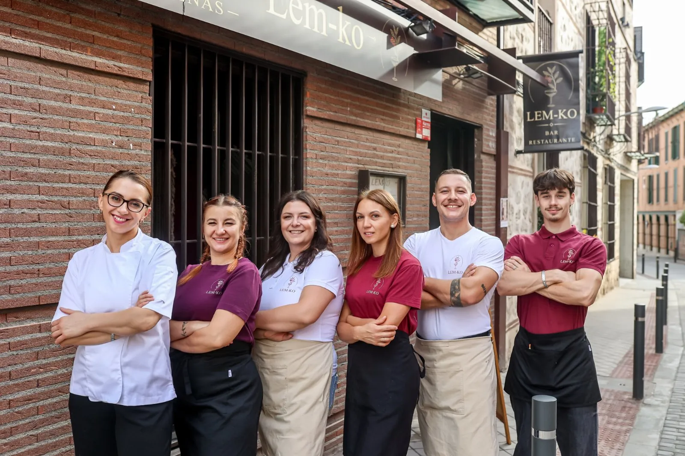
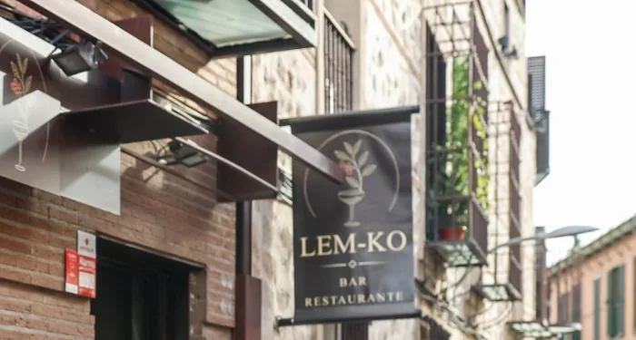

De martes a viernes · 12:00 a 17:00
Menú del día
Cocina casera que mezcla platos españoles y ucranianos. Cambia cada día.
Cocina ucraniana y mediterránea · Pinto
Menú del día entre semana, desayunos los fines de semana y dos salones para tus celebraciones.
Te esperamos de martes a domingo
Nuestra cocina
Nuestra carta ucraniana, con los nombres en lemko tal y como los decimos en casa, y los platos para compartir. Precios con IVA incluido.
El plato de la casaSolo los domingos
Палюшки з бриндзьом
«Las preparamos como las hacían nuestras abuelas: con productos sencillos y naturales, con cariño en cada detalle y respeto por las tradiciones ucranianas.»
El equipo de Lem-ko9,50 €
Чанахи по-львівськи
Guiso tradicional al estilo de Lviv.
Борщ зо сметаном, цибульом і салом
Con crema agria, cebolla y salo.
Тертюхи зо сметаном
Tortitas de patata con crema agria (8 uds.).
Палюшки з бриндзьом
Ñoquis tradicionales con queso bryndza, como los hacían nuestras abuelas.
Solo los domingosПіроги зо сиром
10 uds., hechos a mano en casa.
Піроги з капустом
10 uds.
Dorados en sartén +1 €Піроги з грулями і зо сиром
Patata y queso fresco, 10 uds.
Пільмені з оцетом чи зо сметанком
Con vinagre o crema agria (12 uds.).
Квашене
Verduras encurtidas en casa.
Сало з чорним хлібом і з палюнком
Con 100 ml de vodka, como manda la tradición.
Банош з білими грибами
Crema de maíz con setas boletus.
Снедель з корейськом морквом
Arenque con zanahoria casera al estilo coreano.
Con tartar de fresas aliñado con albahaca fresca.
Langostinos a la parrilla con ensalada fresca y un toque de limón.
Con zanahoria coreana, patata asada, picatostes de pan Borodinsky, crema de remolacha y mostaza.
Nuestra ensalada césar, con pavo.
Con panaché de verduras y patatas baby. Fresca, ligera y llena de sabor.
De las que más nos piden: crujientes y con el aceite justo.
Carne a la parrilla con patata asada, lavash y salsa tzatziki.
Menú de celebracionesLa que hasta a nuestros camareros les cuesta no morder por el camino.
Варенички з малинкою
Varenyky dulces con frutos del bosque.
Merengue crujiente por fuera y suave por dentro, crema de queso y fruta fresca.
Postre del díaМедовик
Tarta de miel casera con ciruelas pasas y praliné.
Fin de semanaСирники
Tortitas de requesón, en los desayunos del fin de semana.
DesayunoКомпот
Bebida casera de fruta.
Узвар
Bebida tradicional de fruta seca. Según disponibilidad.
Чорний хліб
Ración de pan negro.
Vinos, cerveza ucraniana bien fría y cócteles.
Celebraciones y eventos
Tenemos dos salones: el principal y uno totalmente privado para celebraciones más íntimas. Preparamos la mesa, el menú y el ambiente para que tú solo tengas que disfrutar.
Tenemos menú de celebraciones, con platos como el lula kebab a la parrilla. Cuéntanos qué celebras, el día y cuántos seréis, y te preparamos una propuesta.
Quiénes somos
Porque detrás de cada plato también hay una historia.

LEM-KO es un lugar donde se unen dos culturas, dos sabores y una misma pasión por la hospitalidad. Detrás hay un equipo diferente en todo, pero con algo en común: el cariño por su trabajo y las ganas de que te sientas en casa.
Nuestro nombre viene de los lemkos, un pueblo de las montañas de los Cárpatos con sus propias tradiciones, canciones y recetas. Por eso, además de comer, aquí también se celebra: organizamos encuentros con música en directo, trajes tradicionales y talleres para los más pequeños.
Así es Lem-ko
Lo que dicen de nosotros
5,047 reseñas en Google,
todas de cinco estrellas
«Encontramos este sitio por casualidad y nos ha encantado. La comida muy rica y recién hecha, y el local súper bonito y amplio.»
«Muy rica la comida. El postre, varenyky con frutos del bosque, estaba riquísimo.»
«¡Espectacular!»
«La carta es variada, con cocina española y una interesante selección de platos ucranianos. La camarera nos aconsejó qué especialidades probar.»
«Reunión de equipo, lugar agradable con buen ambiente, trato profesional y comida sabrosa.»
«La comida estaba espectacular, todo riquísimo y no dejamos ni las migas.»
«Un sitio muy agradable y se come muy bien. Calidad-precio súper recomendable. El servicio, muy majos. Merece la pena.»
«Un sitio para visitar una y otra vez. Gastronomía espectacular y un servicio excelente.»
«Comimos el menú que tenían y toda la comida estaba buenísima. El servicio muy atento y agradable, y el local está muy bonito decorado.»
Opiniones reales de Google Maps (octubre de 2026), resumidas. Ver todas en Google
Te esperamos de martes a domingo
Te esperamos
Para celebraciones y grupos, llámanos y lo hablamos.
Ven a vernos

Busca nuestro letrero
El mapa es de Google y solo se carga si lo pides.
Antes de venir
Si te queda alguna duda, llámanos al 633 169 662 o escríbenos por WhatsApp.
De martes a viernes, a mediodía (de 12:00 a 17:00). Mezcla platos de cocina española y ucraniana y cambia cada día.
Sí, llámanos al 633 169 662. Para grupos grandes o celebraciones, mejor con unos días de antelación.
Sí. Tenemos dos salones, uno de ellos totalmente privado, y menú de celebraciones para bautizos, cumpleaños, aniversarios, comidas de empresa y reuniones familiares.
Los sábados y domingos por la mañana: syrniki, crepes, tostadas con guacamole y mucho más.
Sí, en Lem-ko te atendemos en español y en ucraniano.
Los palushky con bryndza solo los preparamos los domingos.
Te esperamos en Pinto
Llámanos para reservar, escríbenos por WhatsApp o pásate a probar el menú del día. Te esperamos.